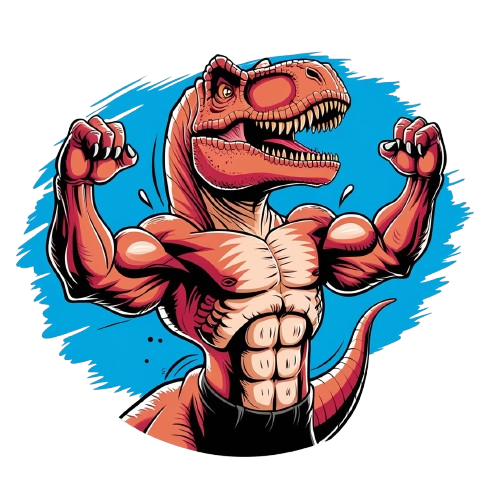

Mussum Ipsum, cacilds vidis litro abertis. Si num tem leite então bota uma pinga aí cumpadi! Delegadis gente finis, bibendum egestas augue arcu ut est. Quem num gosta di mim que vai caçá sua turmis! Bota 1 metro de cachacis aí pra viagem! Mauris nec dolor in eros commodo tempor. Aenean aliquam molestie leo, vitae iaculis nisl. Nec orci ornare consequat. Praesent lacinia ultrices consectetur. Sed non ipsum felis. Vehicula non. Ut sed ex eros. Vivamus sit amet nibh non tellus tristique interdum. Nulla id gravida magna, ut semper sapien. Per aumento de cachacis, eu reclamis. Nullam volutpat risus nec leo commodo, ut interdum diam laoreet. Sed non consequat odio. Eu nunca mais boto a boca num copo de cachaça, agora eu só uso canudis! Suco de cevadiss, é um leite divinis, qui tem lupuliz, matis, aguis e fermentis. Suco de cevadiss deixa as pessoas mais interessantis. Em pé sem cair, deitado sem dormir, sentado sem cochilar e fazendo pose. Per aumento de cachacis, eu reclamis. Vehicula non. Ut sed ex eros. Vivamus sit amet nibh non tellus tristique interdum.
